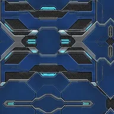

Өч киртә үзенчәлеге
Тотрыклы капкалар, алдан карап фазалаша торган капкалар, һәм сызылган, ябылган яки кире борылган хәрәкәтләнүче капкалар. Тишекләр ара белән тарая.

Alien FlyingWillowinWorlds уен бите WillowinWorlds-ка кире кайтуТоннельдә очыгыз. Тишекне табыгыз.
Чит планета тоннеле аша чиксез очыш. Стенаны әйләнеп үтегез, һәр капкадагы тишектән уздырыгыз һәм калканны зарядлау өчен кристаллар җыегыз.
Unity проектында тулы йөгерү циклы, ангар һәм көйләүләр экраннары бар; җәмәгать версиясе әлегә юк.
Тоннель эчендә әйләнү өчен сөйрәгез. Компьютерда A һәм D яки уклар кулланыгыз.
Һәр капка тишек калдыра. Тотрыклы, фазалы һәм хәрәкәтләнүче киртәләр йөгерү барган саен барлыкка килә, тишекләр ара арту белән тарая.
Кристаллар упай һәм комбо өсти һәм ике тап белән күтәрелә торган калканны зарядлый. Коллизиядә йөгерү тәмамлана, иң яхшы упайыгыз саклана.
Тотрыклы капкалар, алдан карап фазалаша торган капкалар, һәм сызылган, ябылган яки кире борылган хәрәкәтләнүче капкалар. Тишекләр ара белән тарая.
Кристаллар җыю калканны зарядлый. Ике тап аны күтәрә.
Упай ераклыктан, кристаллардан, узылган капкалардан һәм якын уздырылган кыстырмалардан килә, комбо мультипликатор белән.
Тоннель сәяхәт иткәндә тема үзгәртә: крио трубка, биомех тамырлар, реактор үзәге һәм буш урын ярыгы.
Дүрт косметик корабль, циклларда җыелган Xeno белән сатып алына. Уенда өстенлек бирми.
Тавыш, адаптив музыка, тактил хис һәм киметелгән хәрәкәт һәрберсе ачык яки ябык булырга мөмкин. Прогресс җайланмада саклана.
Чыгу датасы әлегә юк. Болар проект максатлары, вәгъдәләр түгел.
Проект текстуралары. Алар уен кадрлары түгел.


Телефоннар өчен чиксез тоннель очучысы. Чит планета тоннеле эчендә әйләнәсез, һәр киртә капкасының тишеге аша үтәсез һәм упай һәм калкан өчен кристаллар җыясыз. Студиянең BlastBlast! һәм Vacuum Shot Алар да чиксез, ләкин рекойл белән хәрәкәт итәләр; монда сез көйлисез.
Әле түгел. Alien Flying - башлангыч прототип, җәмәгать версиясе һәм чыгу датасы юк. Максатлы платформалар - Android һәм iOS.
Alien Flying - WillowinWorlds тарафыннан ясалган, бәйсез мобиль уен студиясе (аның төп уеннар). Бу биттәге иҗтимагый каналларда WillowinWorlds'ны күзәтегез, яки электрон почта willowinworlds@gmail.com Alien Flying турындагы яңартуларны сорау өчен.
Тавыш бирү студиянең каналларында ачылачак. Катнашу өчен WillowinWorlds'ны күзәтегез.